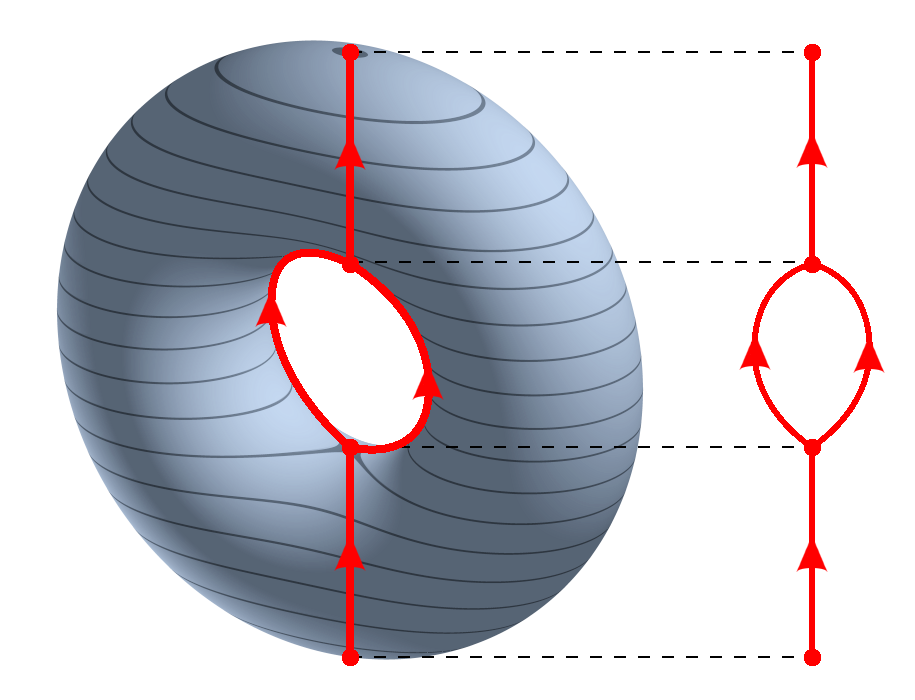
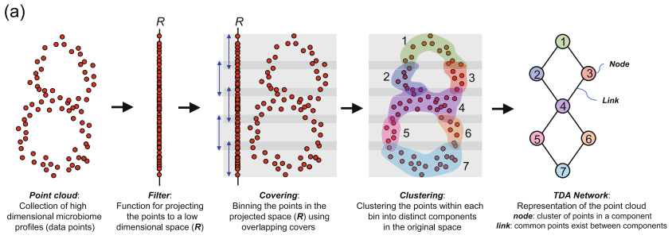
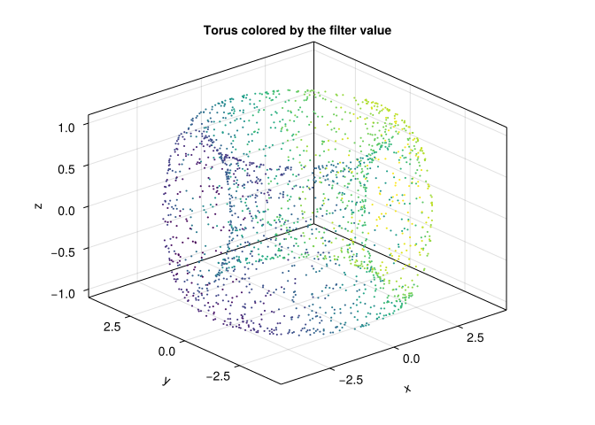
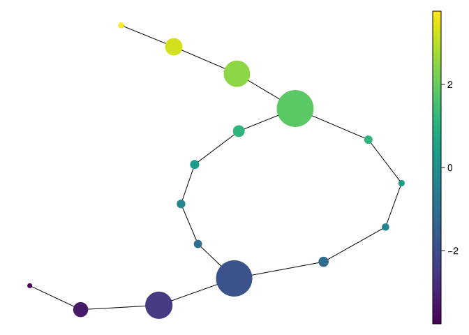
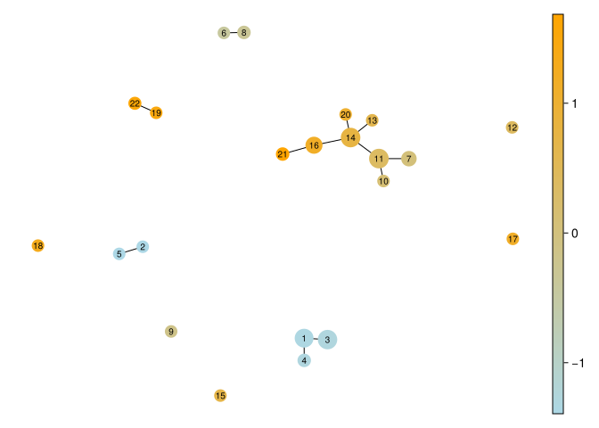
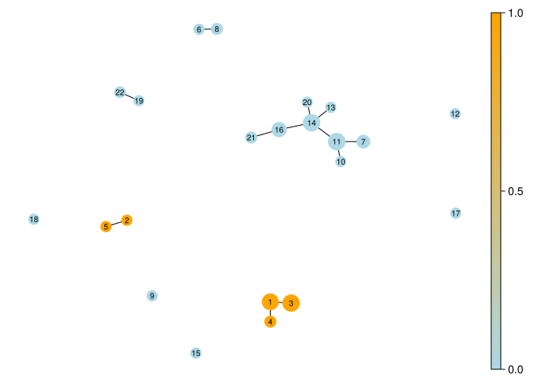
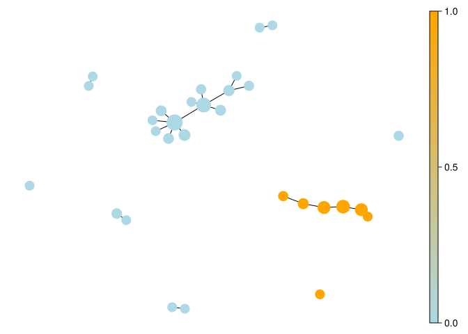

In topology, one way to visualize a complicated space is to collapse the connected components of the level sets of a function \(f : X \to \mathbb{R}\). The result is the Reeb graph.
So instead of trying to look directly at a high-dimensional object, we look at how it changes along the values of a function. The Reeb graph records how those level sets split, merge, and loop.

The Reeb graph of a torus using the projection on the z-axis. Source: Wikipedia1
11.1.1 The classical Mapper construction
Mapper is motivated by the Reeb graph (Singh et al. 2007). We replace the continuous ingredients by discrete ones:
\(X\) becomes a finite metric space, or point cloud;
\(f : X \to \mathbb{R}\) becomes any real-valued function on the data;
instead of inverse images of points, we use inverse images of overlapping intervals;
instead of connected components, we cluster each inverse image.
The resulting clusters form a cover of the data. Here the Mapper graph is the 1-skeleton of the nerve: one node per cluster and an edge precisely when two clusters share an observed data point. The full nerve also has a triangle for every nonempty triple intersection, a tetrahedron for every nonempty four-way intersection, and so on. Our graph does not store those higher simplices.
For example, cover elements containing observations {1, 2} and {2, 3} give an edge because observation 2 belongs to both. Two clusters that merely lie close in feature space do not give an edge. The overlap of filter intervals makes shared membership possible; the local clustering decides which particular nodes share it.

This graph can shed light on the geometry of the dataset:
nodes represent clusters of data points;
node colors summarize some statistic of the points in that node;
edges indicate shared membership;
loops and branches are questions to investigate through the underlying observations and parameter changes.
A triangle in this graph need not be a hole in the full nerve: a triple intersection fills it. Nor does a graph loop by itself prove that the sampled population has a topological hole. The construction depends on the filter, cover, clustering, and sampling.
[ Info: Precompiling DataFramesExt [9e668153-f473-5010-85ff-a85cbe3b95ea]
SYSTEM: caught exception of type :MethodError while trying to print a failed Task notice; giving up
TaskLocalRNG()
We work with a torus. It is a useful example because its Reeb graph under a coordinate projection has a recognizable loop-with-flares structure:
X =torus(2000)fv =first.(X)Xmat =as_matrix(X)fig =Figure()ax =Axis3(fig[1, 1], title ="Torus colored by the filter value")scatter!(ax, Xmat[1, :], Xmat[2, :], Xmat[3, :], color = fv, markersize =3)fig
┌ Warning: Found `resolution` in the theme when creating a `Scene`. The `resolution` keyword for `Scene`s and `Figure`s has been deprecated. Use `Figure(; size = ...` or `Scene(; size = ...)` instead, which better reflects that this is a unitless size and not a pixel resolution. The key could also come from `set_theme!` calls or related theming functions.
└ @ Makie ~/.julia/packages/Makie/UjJJY/src/scenes.jl:238

The filter function is simply the projection onto the first coordinate:
Here Uniform(length = 12, expansion = 0.35) creates overlapping intervals in the image of the filter, and DBscan refines each inverse image. If the filter range has width \(R\), the 12 centers have spacing \(\Delta=R/11\), and each interval has width \(1.35\Delta\). Adjacent intervals overlap by \(0.35\Delta\), about 26% of their width. expansion is not the overlap percentage.
And now we plot the Mapper graph, coloring each node by the mean filter value of the points it contains:
mapper_plot(mp, node_values =node_colors(mp, fv))
┌ Warning: Found `resolution` in the theme when creating a `Scene`. The `resolution` keyword for `Scene`s and `Figure`s has been deprecated. Use `Figure(; size = ...` or `Scene(; size = ...)` instead, which better reflects that this is a unitless size and not a pixel resolution. The key could also come from `set_theme!` calls or related theming functions.
└ @ Makie ~/.julia/packages/Makie/UjJJY/src/scenes.jl:238

Compare the graph with the projected torus, then inspect the observation indices in mp.C. The drawing places nodes using a graph layout: screen coordinates and edge lengths are not distances between the original observations. By default, mapper_plot scales node marker size by membership count and colors nodes by the supplied values, here the mean filter value. Since cover elements overlap, the sum of their sizes can exceed the number of observations.
One package detail matters when reading a graph: DBscan collects its noise points into an extra node within each cover element. That node may contain disconnected observations. Its existence should not be mistaken for a connected dense population. We avoid this issue in the next example by using neighborhood and cluster minima of one, so local refinement is radius-graph connectivity without noise rejection.
11.3 A real dataset: Iris measurements
Enough doughnuts; let us look at flowers. The Iris dataset contains 150 observations, four measurements in centimeters, and three species labels (Fisher 1936a, 1936b). We use a bundled copy of UCI’s iris.data, so rendering needs no network connection. Its provenance and the documented differences from the historical data are recorded in datasets/README.md.
The feature order is sepal length, sepal width, petal length, and petal width. We use standardized Euclidean distance so that a one-standard-deviation difference has the same weight in each measurement. This also gives correlated petal measurements two contributions; scaling does not remove redundancy. Other weighting choices are possible and can change the graph.
Our first filter is standardized petal length. This is a deliberate question: how does local similarity change along increasing petal length? Species labels are reserved for interpretation; they are not an input to the construction.
┌ Warning: Found `resolution` in the theme when creating a `Scene`. The `resolution` keyword for `Scene`s and `Figure`s has been deprecated. Use `Figure(; size = ...` or `Scene(; size = ...)` instead, which better reflects that this is a unitless size and not a pixel resolution. The key could also come from `set_theme!` calls or related theming functions.
└ @ Makie ~/.julia/packages/Makie/UjJJY/src/scenes.jl:238

We can follow the construction all the way back to a node’s members:
iris_node =argmax(length.(iris_mapper.C))iris_members = iris_mapper.C[iris_node]species_order =sort(unique(iris_species))iris_node_table =DataFrame(species = species_order, observations = [count(==(s), iris_species[iris_members]) for s in species_order])iris_node_table
3×2 DataFrame
Row
species
observations
String
Int64
1
Iris-setosa
0
2
Iris-versicolor
40
3
Iris-virginica
4
The largest node contains 44 observations: 40 versicolor and four virginica. It is a local cluster inside one filter interval, not an exclusive global cluster: an observation can also belong to a neighboring node. A mean color hides variation, so inspect members before assigning a biological interpretation. The Iris drawings use smaller markers based on the square root of membership count to keep nearby node IDs legible.
The same graph can be colored by a statistic different from its filter. Here we show the fraction of each node belonging to Iris-setosa:
┌ Warning: Found `resolution` in the theme when creating a `Scene`. The `resolution` keyword for `Scene`s and `Figure`s has been deprecated. Use `Figure(; size = ...` or `Scene(; size = ...)` instead, which better reflects that this is a unitless size and not a pixel resolution. The key could also come from `set_theme!` calls or related theming functions.
└ @ Makie ~/.julia/packages/Makie/UjJJY/src/scenes.jl:238

Colors close to 1 mean all or nearly all members are setosa; colors close to 0 mean few are. Mixed nodes, especially among the other two species, deserve inspection. This is exploration of one small dataset, not a species classifier or a test of generalization.
11.4 How sensitive is that picture?
We compare cover resolution, overlap, local radius, and filter choice. In addition to node and edge counts, record coverage, maximum observation multiplicity, graph components, and graph cycle rank \(E-V+c\). Cycle rank belongs to the displayed graph, not necessarily to the data or the full nerve.
# The same metric and local clustering, with sepal width as the filter.mapper_plot(last(iris_alternatives), node_values =node_colors(last(iris_alternatives), setosa_indicator), node_size =iris_node_sizes(last(iris_alternatives)), colormap = [:lightblue, :orange])
┌ Warning: Found `resolution` in the theme when creating a `Scene`. The `resolution` keyword for `Scene`s and `Figure`s has been deprecated. Use `Figure(; size = ...` or `Scene(; size = ...)` instead, which better reflects that this is a unitless size and not a pixel resolution. The key could also come from `set_theme!` calls or related theming functions.
└ @ Makie ~/.julia/packages/Makie/UjJJY/src/scenes.jl:238

Increasing the local radius joins more points within each inverse image. Increasing overlap repeats more observations across nodes and can introduce extra edges. Coarsening the cover groups broader ranges of the filter. Changing to sepal width asks a different question even with identical distances. Differences between these pictures are part of the result, not inconvenient clutter to discard.
Here the baseline has 22 nodes, 12 edges, and 10 graph components, while covering all 150 observations. That fragmentation is not ten discovered species: small local radius neighborhoods break the observations into several pieces. Radius 0.95 reduces the graph to 12 nodes and four components. The sepal-width filter produces 30 nodes and nine components with radius 0.65. Even coarsening the cover from eight intervals to five produces more nodes (23), because local refinement also changes. These results are a useful reminder that cover resolution alone does not determine graph size.
For a substantive analysis, also compare bootstrap or subsampled observations and track which original memberships support a proposed branch. Agreement across a few settings is a useful diagnostic, but is not a significance test or a proof that a graph recovers a Reeb graph.
11.5 A note on data representation
The local JuliaTDA packages work natively with EuclideanSpace objects from MetricSpaces.jl. If your data starts life as a d \times n matrix with one point per column, EuclideanSpace(M) converts it to the representation expected by TDAmapper.jl. When you want a matrix back for plotting, use as_matrix(X).
The column convention matters: transposing the matrix changes what counts as an observation.
11.6 Try it yourself
An observation belongs to three Mapper nodes. How many edges and higher nerve simplices does that shared membership supply?
NoteWorked answer
All three pairs have an edge, giving a triangle in the graph. In the full nerve their common observation supplies the 2-simplex that fills that triangle. The graph alone omits the filling.
Does a longer drawn edge imply a greater distance between the original flowers?
NoteWorked answer
No. The default layout arranges an abstract overlap graph. Compare members in the original standardized feature space if you need a distance statement.
In the Iris example, change only the coloring from setosa fraction to mean sepal width. Which part of Mapper changes?
NoteWorked answer
Only the displayed node statistic changes. The filter, cover, refinement, memberships, and graph stay fixed. Changing the filter to sepal width would rebuild the inverse images and potentially change all of them.
Singh, Gurjeet, Facundo Mémoli, and Gunnar Carlsson. 2007. “Topological Methods for the Analysis of High Dimensional Data Sets and 3D Object Recognition.”Eurographics Symposium on Point-Based Graphics, 91–100. https://doi.org/10.2312/SPBG/SPBG07/091-100.